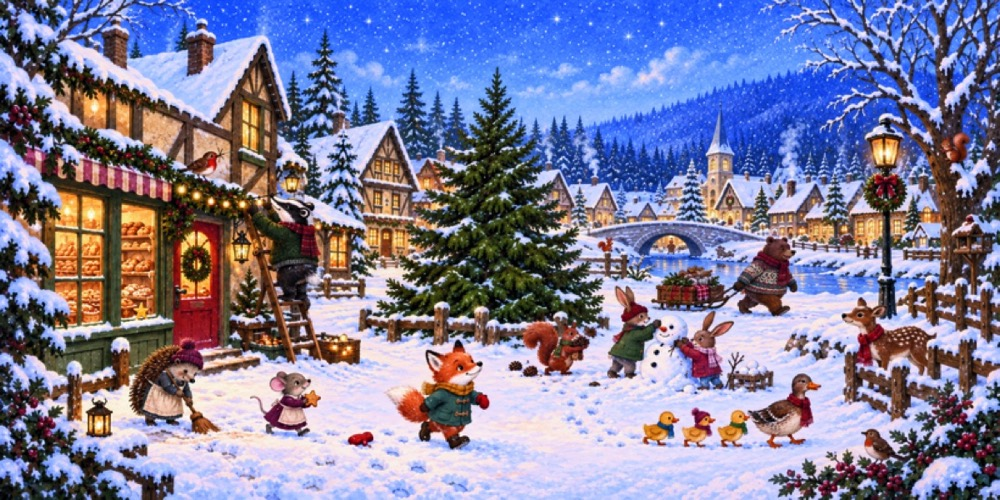
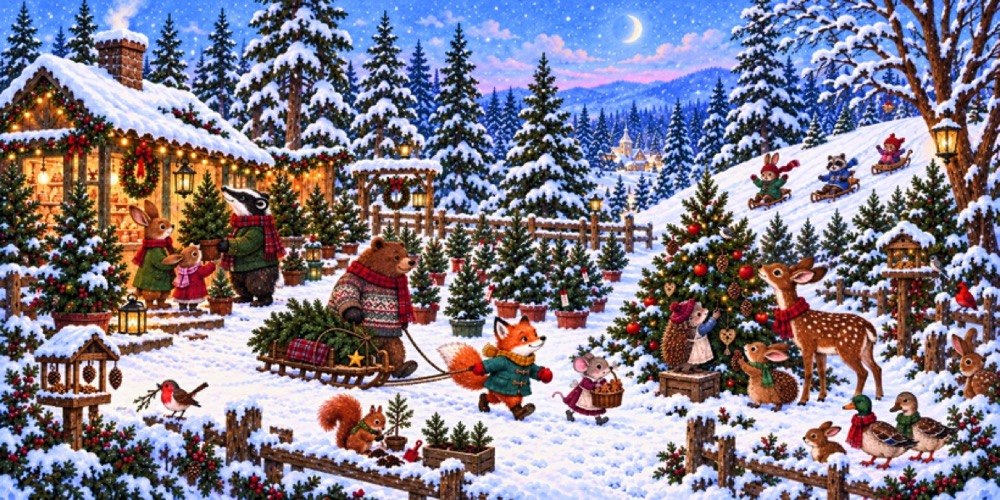
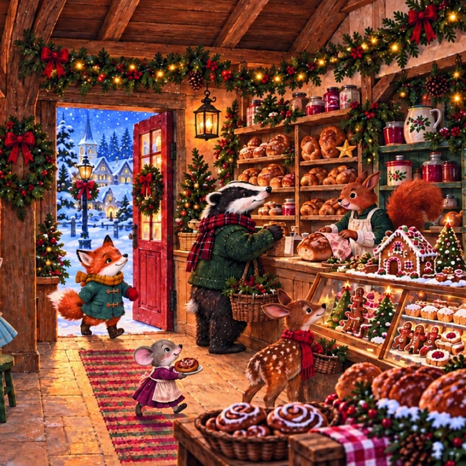
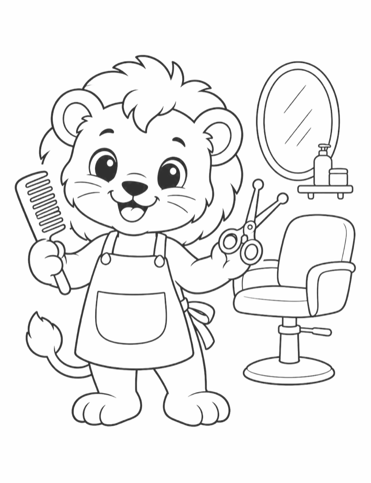
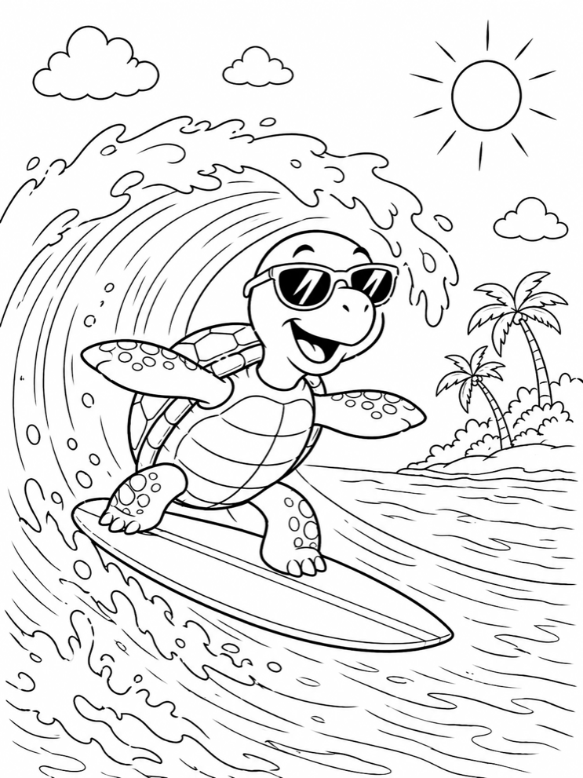
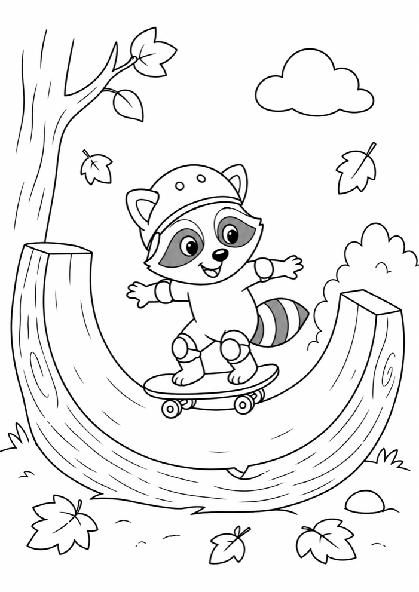
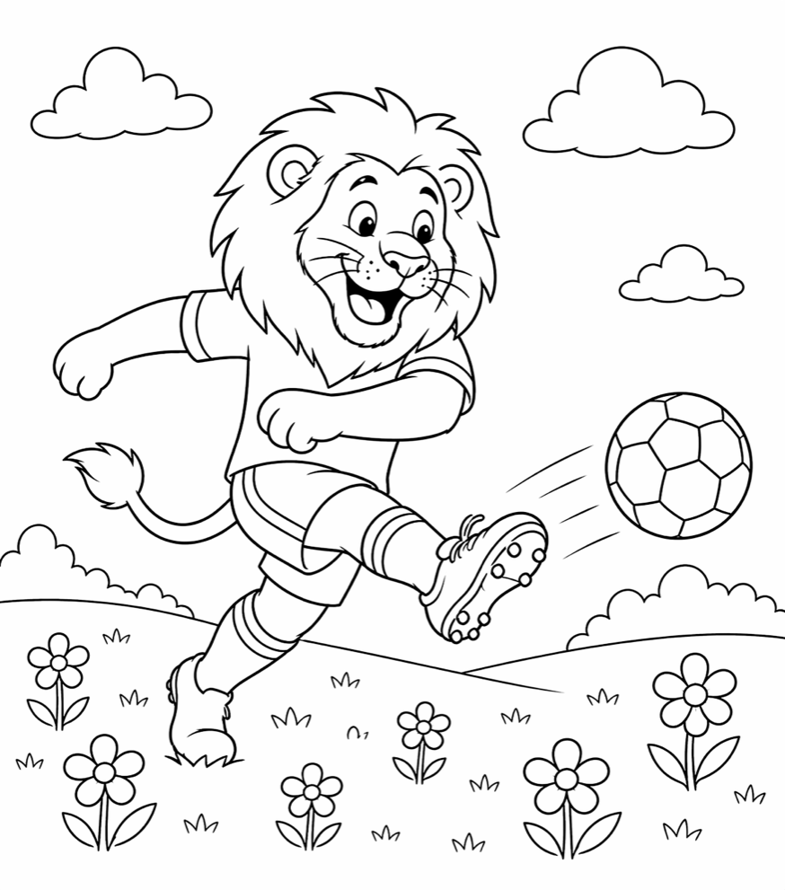
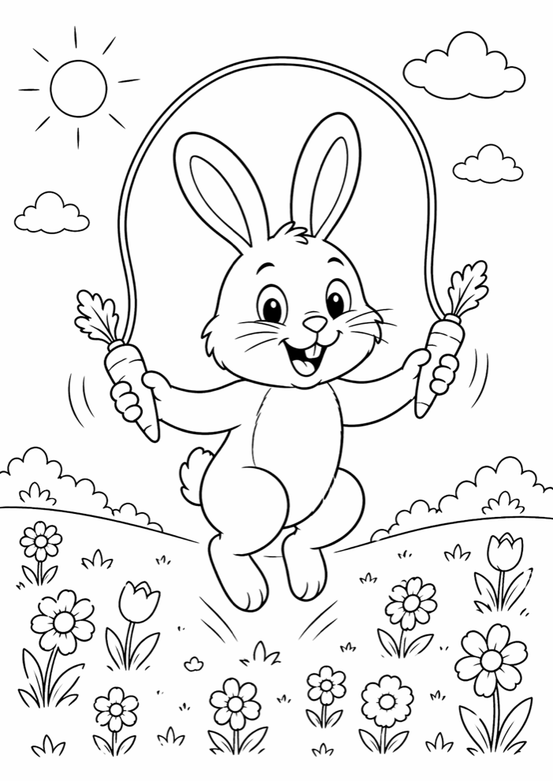
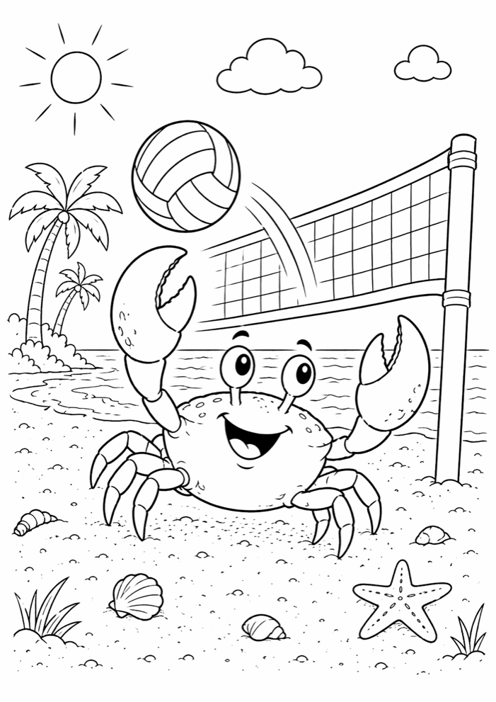
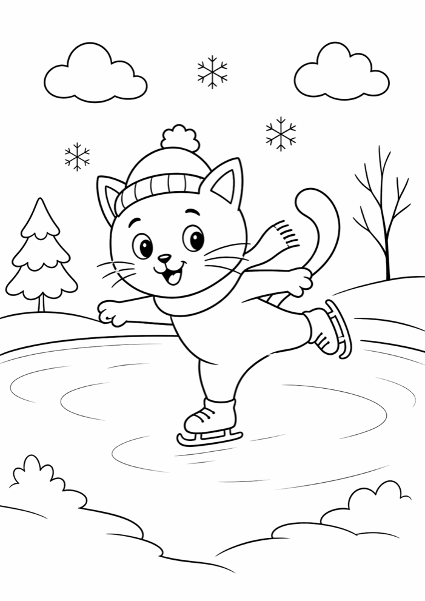

Malbücher ab 4 · Wimmelbuch ab 2 Jahren
Bücher, die Kinder selbst entdecken
Ein Weihnachts-Wimmelbuch zum Suchen und Erzählen und zwei Malbücher mit je vierzig Motiven zum Ausmalen. Alle drei von Sebastian Mentzel, alle drei bei Amazon erhältlich — und alle so gemacht, dass Kinder damit allein etwas anfangen können.
Wimmelbuch · Entdecken, Suchen, Erzählen
Weihnachten im kleinen Walddorf
Mein Weihnachts-Wimmelbuch
Ein ganzes Dorf freut sich auf Weihnachten. In der Bäckerei duftet es nach Plätzchen, in der Werkstatt entstehen Geschenke, und auf dem Dorfplatz wartet ein großer Weihnachtsbaum. Acht winterliche Wimmelbilder voller kleiner Geschichten — mit Suchfragen auf jeder Seite und einer eigenen Malidee am Schluss.
- 8 Wimmelbilder
- 21,6 × 21,6 cm
- Mit Suchfragen
- 27 Seiten
- Ab 2 Jahren
Blick ins Buch






Drei Freunde führen durch das Dorf
Fips, der Fuchs
Am türkisfarbenen Mantel und am gelben Schal zu erkennen. Er läuft durch alle acht Bilder — und ist nicht immer leicht zu finden.
Milla, die Maus
Rotes Kleid, helle Schürze. Sie bringt gern etwas Leckeres mit, meistens frisch aus der Bäckerei.
Pip, das Rotkehlchen
Klein, mit roter Brust, und selten dort, wo man zuerst schaut. Auf jeder Doppelseite sitzt er woanders.

Malbuch ab 4 Jahren
Tierkinder entdecken Berufe
Kleine Tiere, große Träume
Vierzig Ausmalbilder von Tierkindern in ihrem Traumberuf: die Katze als Bäckerin, der Elefant auf der Baustelle, der Tiger im Cockpit, der Affe als Astronaut. Große Flächen und kräftige Linien — gemacht für Hände, die das Ausmalen gerade erst lernen.
- 40 Ausmalbilder
- Ab 4 Jahren
- 21,6 × 27,9 cm
- 85 Seiten
- Einseitig bedruckt
Blick ins Buch




Große Flächen
Keine Schraffuren, keine Mini-Details. Die Formen sind so groß, dass der Stift auch dann im Feld bleibt, wenn die Hand noch wackelt.
Einseitig bedruckt
Jedes Motiv hat seine eigene Seite, die Rückseite bleibt leer. Drückt ein Filzstift durch, ist kein zweites Bild ruiniert.
Vierzig Berufe
Vom Bäcker über die Feuerwehr bis zur Raumfahrt. Jedes Bild zeigt einen Beruf mit seinem Werkzeug — und gibt beim Ausmalen etwas zu erzählen.
Malbuch ab 4 Jahren
Das lustige Tier-Malbuch
Sportlicher Malspaß für das ganze Jahr
Vierzig Tiere bei ihren verrückten Abenteuern durch Frühling, Sommer, Herbst und Winter. Die Giraffe beim Turmspringen, der Frosch beim Stabhochsprung, der Pinguin beim Bobfahren, die Maus beim Segeln — auf jeder Seite gibt es etwas zum Lachen und zum Ausmalen.
- 40 Motive
- Ab 4 Jahren
- Vier Jahreszeiten
- 21,6 × 27,9 cm
- 84 Seiten
- Einseitig bedruckt
Blick ins Buch






Vier Jahreszeiten
Die Motive sind nach Frühling, Sommer, Herbst und Winter geordnet. Nebenbei lernt sich, was im Jahr wann passiert — ohne dass es nach Lernen aussieht.
Sport als Aufhänger
Jedes Tier macht etwas: Skifahren, Surfen, Basketball, Segeln. Das gibt beim Ausmalen mehr zu bereden als ein Tier, das nur dasteht.
Kein Durchdrücken
Jedes Motiv liegt auf einem eigenen Blatt mit leerer Rückseite. Große Ausmalflächen, passend für Kinder ab vier.
Für wen
Wann die Bücher gerade richtig sind
Alle drei beschäftigen Kinder ohne Bildschirm und ohne Anleitung — das Wimmelbuch im Sitzen zu zweit, die Malbücher auch allein.
- Adventszeit
- Nikolausstiefel
- Weihnachtsgeschenk
- Kindergeburtstag
- Mitbringsel
- Kita und Vorschule
- Lange Autofahrt
- Regennachmittag
Alle drei bringen Gespräche in Gang. Beim Wimmelbuch über das, was auf den Bildern passiert, beim Berufe-Malbuch über die Frage von der Rückseite — was möchtest du einmal werden? — und beim Sport-Malbuch darüber, welche Jahreszeit gerade draußen ist.
Über mich
Sebastian Mentzel
Die Bücher entstehen nebenberuflich in Berlin, aus Spaß an der Sache. Was mich daran reizt: Manche Dinge ändern sich im Kindesalter nicht. Ausmalen gehört dazu. Ein Stift, eine leere Fläche, und das Kind entscheidet selbst, welche Farbe der Elefant bekommt — daran hat sich über Generationen nichts geändert. Es ist eine der wenigen Beschäftigungen, bei denen nichts vorgegeben ist außer den Linien.
Die Illustrationen entstehen mit Hilfe künstlicher Intelligenz. Die Ideen, die Auswahl der Motive und die Entscheidung, was am Ende ins Buch kommt, stammen von mir.
Häufige Fragen
Kurz beantwortet
Ab welchem Alter passen die Bücher?
Was ist eine Malidee im Wimmelbuch?
Drücken Filzstifte in den Malbüchern durch?
Gehören die Bücher zu einer Reihe?
Wo kann ich die Bücher kaufen?
Gibt es Mengenrabatt für Kitas?
Kontakt
Fragen zu den Büchern
Schreib einfach eine Mail.
kreativdschungel@gmx.de